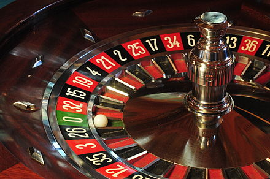

Руле́тка (фр. roulette — «колёсико») — азартная игра, представляющая собой вращающееся колесо с 36 секторами красного и чёрного цветов и 37-м зелёным сектором «зеро» с обозначением нуля (в американском варианте два зелёных — 0 и 00, итого 38 секторов). Игроки, играющие в рулетку, могут с делать ставку на выпадение шарика на цвет (красное или чёрное), чётное или нечётное число, диапазон (1—18 или 19—36) или конкретное число.
Крупье запускает шарик над колесом рулетки, который движется в сторону, противоположную вращению колеса рулетки, и в конце концов выпадает на один из секторов. Выигрыши получают все, чья ставка сыграла (ставка на цвет, диапазон, чётное-нечётное или номера).
| Название на английском | Перевод на русский | Описание | Размещение фишки |
|---|---|---|---|
| Straight / Single | Прямая ставка | Ставка на один номер | На поле с изображением конкретного номера |
| Split | Сплит / пара | Ставка на 2 номера, примыкающие друг к другу горизонтально или вертикально (например, 14-17 или 8-9) | На линию, разделяющую два поля |
| Street | Стрит / улица | Ставка на 3 идущих подряд числа в горизонтальной линии (например, 7-8-9) | На линию, отделяющую нумерованное поле от внешней области, но не граничащую с секторами внешних ставок |
| Corner / Square | Угол / каре / крест | Ставка на 4 смежных номера | В точку пересечения выбранных номеров (т.е. на угол) |
| Six Line / Double Street | Линия шести / две улицы / линия | Ставка на 6 идущих подряд номеров, образующих две горизонтальных линии (например, 31-32-33-34-35-36) | На линию, отделяющую нумерованное поле от внешней области, но не граничащую с секторами внешних ставок, и обязательно на угол между двумя улицами |
| Basket | Корзина | Ставка на три номера, из которых хотя бы один — зеро (1-2-0 или 2-3-0 в европейской рулетке; 1-2-0, 2-3-00 или 0-00-2 в американской рулетке) | На угол, смежный между тремя полями (в точку их соединения) |
| First Four | Первая четвёрка | Ставка сразу на четыре номера — 0, 1, 2 и 3; ставка на первую улицу и зеро одновременно | На угол пересечения сектора зеро, номера 3 и линии, не граничащей с сектором внешних ставок |
| Top Line | Высшая линия / Корзина на 5 номеров | Ставка на два сектора с зеро (0 и 00) и первую улицу (1-2-3), доступная лишь в американской рулетке (итого 0-00-1-2-3) | На угол пересечения сектора с двойным зеро, номера 3 и линии, не граничащей с сектором внешних ставок |
Пора Играть!Если вам 18 лет и вы находить в зравом уме и при памяти. Деньги для ставок не должны быть добыты криминальным путем!
Введите ваши данные для регистрации в игре в нашем казино: